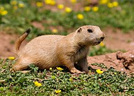
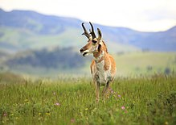

The American bison (Bison bison), otherwise known as the American buffalo or just buffalo, is native to North American grasslands. Before settlers came to America bison roamed in large herds all across North America and had a total population of 60 million. In 1889 the bison population had dwindled to 541 because of hunting, and today their population is around 31,000 thanks to recovery efforts. Many Native American tribes considered bison to be sacred animals that held religious value.

The Prairie dog (Cynomys ludovicianus), is a herbivorous burrowing ground squirrel that can be found in the plains of North America. Here in Lubbock, you can find the black-tailed prairie dog. Prairie dogs make their homes by digging burrows that can be 33 feet long and go down almost 10 feet underground. Prairie dogs are said to be highly social, and they live in large colonies that can span hundreds of acres. When threatened a prairie dog will make a high-pitched call to alert other prairie dogs in the area of the danger.

The Pronghorn (Antilocapra americana), which is indigenous to central North America, is the only surviving member of the family Antilocarpa. Long ago, during the Pleistocene epoch, there were 11 other species that the pronghorn shared a family with. Interestingly, the pronghorns prefer to form mixed-sex herds during the winter only to break up in spring into groups of young males and harems of females, with adult males venturing off to live alone. Like the buffalo, the pronghorn thrived and had a large population until European settlers arrived and began hunting the animal. Pronghorns also play a role in Native American mythology and oral history.

Tip: Click on the name of an animal to go to its wikipedia page!